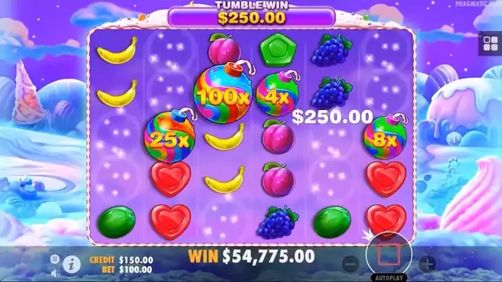

Guides
Multiplier Bombs: Where the Big Sweet Bonanza Wins Come From
The multipliers only appear in free spins, they only apply once the tumbling stops, and they add rather than multiply together. Each of those three details changes the arithmetic.
🔞 18+ only · Real-money gambling

Base-game Sweet Bonanza is a fruit machine with a good tumble. The reason anyone plays it is the free spins round, and the reason the free spins round pays is a symbol that does not exist outside it: the multiplier bomb.
Three rules that do all the work
Free spins only. No bomb ever lands in the base game. A base-game round is capped by the paytable alone.
Applied at the end. Bombs sit on the grid while the chain tumbles. Only when a drop produces no win are the values collected and applied to the round total.
Added, not multiplied. Three bombs of 10×, 20× and 25× give 55×, not 5,000×. This is the detail most people get wrong.
What a realistic round looks like
The values run from small to very large, and the distribution is heavily weighted to the small end. A typical free spin either sees no bomb at all, or one modest bomb landing on a modest win.
What lands | Effect on the spin | How it feels |
|---|---|---|
No bomb | Paytable value only | The majority of free spins |
One low bomb on a small win | A few times the stake | The normal good outcome |
Several bombs on a long chain | The round that pays for the session | Rare |
A large bomb on a large chain | Near the game's ceiling | The clip you saw on social media |
A big number on screen is not a big win. A 100× bomb landing on a 0.2× tumble is 20× the stake — a good spin, not a life-changing one. The multiplier and the win it lands on have to be large at the same time.
Retriggers and the Ante Bet question
Landing enough scatters during the round extends it, which is where the longest sessions of free spins come from. The Ante Bet, meanwhile, raises your stake to make the round trigger more often. It buys frequency, not value: you reach the feature sooner and pay more per spin for the privilege, and the published return accounts for the trade.
The same holds for the feature buy where it is offered. Paying a hundred times the stake for a guaranteed round removes the wait and concentrates the variance — the arithmetic underneath is unchanged.
Practical takeaways
Judge a free spins round by the total, not by the largest number that flashed on screen.
Budget for the base game. That is where the spins are spent while you wait.
Neither Ante Bet nor the feature buy is a strategy. Both are ways of paying to skip the boring part.
The spin-offs handle multipliers differently — see how the wheel does it in Sweet Bonanza Candyland, and how the higher-ceiling version reworks the round in Sweet Bonanza 1000.